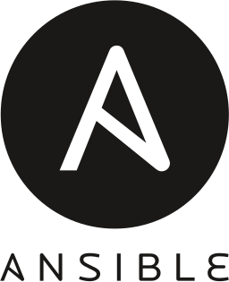

Self-Hosted Personal Portfolio
This site, the one you're reading right now, runs on a Raspberry Pi 5 in a DMZ VLAN behind an OPNsense firewall I built at home. The internet reaches it only through Cloudflare, on one port. The whole host is rebuildable from an Ansible playbook, and it has already been rebuilt twice. Live at justingarter.com.
- Reverse Proxy
- DNS & TLS
- VLAN Segmentation
- Firewall Policy
- Ansible
Network diagram
Technologies Used

Ansible| Host | Raspberry Pi 5 · 1 GB RAM · microSD boot |
|---|---|
| Operating system | Raspberry Pi OS Lite (Debian 13) |
| Web server | Caddy · port 443 only · Cloudflare Origin CA certificate |
| Edge | Cloudflare proxy · Full (Strict) TLS · DDNS on a systemd timer |
| Gateway | OPNsense VM on Proxmox · admits Cloudflare's address ranges only |
| Network position | Single-homed on a DMZ VLAN blocked from every private network |
| Firewall | nftables · hand-written · default-deny inbound |
| Management | SSH, key only, from two admin sources · console password as break-glass |
| Radios | Wi-Fi and Bluetooth disabled at the firmware layer |
| Cooling | Active cooler · added after thermal testing |
| Configuration | Ansible · 7 roles · encrypted vault |
| Source | github.com/justin-garter/pi-webserver-ansible |
Overview
This portfolio started on Wix. Self-hosting it gave me a low-stakes place to apply the things I do professionally, like network segmentation, controlled remote access and defense in depth, to my own network. It has been rebuilt twice since: in August 2026 onto a smaller Raspberry Pi, and in September 2026 onto a new network behind a firewall I built when I moved. Both rebuilds taught me more than the original build did.
What I Built
A static site served by Caddy on a Raspberry Pi 5 with 1 GB of memory, running Raspberry Pi OS Lite on Debian 13. It sits single-homed on a dedicated DMZ VLAN, with Wi-Fi and Bluetooth disabled at the firmware layer rather than left unconfigured. A dual-homed host bridges two networks regardless of what the firewall says.
The only way in from the internet is HTTPS through Cloudflare. The home router forwards one port, 443, to an OPNsense firewall running as a virtual machine on Proxmox, and OPNsense admits that traffic only from Cloudflare's published address ranges. Loading the bare home IP from a phone on cellular times out, so nobody can reach the server around the proxy. OPNsense also blocks the DMZ from opening a connection to any private network, so a compromised web server would have nowhere to go.
TLS between Cloudflare and the server uses a Cloudflare Origin CA certificate instead of Let's Encrypt. Behind Cloudflare's proxy, Let's Encrypt would have needed port 80 open and a renewal every few months that fails quietly. The origin certificate is valid for 15 years and needs neither. The tradeoff is that only Cloudflare trusts it, which is fine for a site that is always proxied anyway.
Administration is SSH with keys only, admitted from two sources: the management VLAN and my admin desktop. OPNsense enforces that, and the Pi's own hand-written nftables ruleset enforces it again. Sudo still asks for a password, so a stolen key alone doesn't get root. The same password works at the physical console, which is the break-glass if every network path fails.
A DDNS script on a systemd timer keeps DNS current against a dynamic home IP. Caddy accepts client-IP headers only from Cloudflare's ranges, so access logs record real visitors rather than edge addresses. Further hardening covers automatic security patching, detection of repeated scanning, and removal of the provisioning tooling that has no business running on a live host.
What Rebuilding Taught Me
Rebuilding a server from its own documentation is the only reliable way to find out how much of that documentation was true. Not all of it was, which is the entire argument for doing it.
The habit that came out of it is to verify behaviour rather than configuration. A config file describes intent. Querying a running service describes reality. Actually attempting the thing describes truth, and those three answers are not always the same. SSH here is key-only because I tried to log in with a password and the server refused without even prompting, not because a file says so. The Cloudflare trust scoping was confirmed by sending forged client-IP headers from an untrusted host and checking what actually got logged.
Verification log - what was tested, and how
| Claim | How it was checked | Result |
|---|---|---|
| SSH accepts keys only | Attempted a password login against the running host (Aug 2026). The playbook also asserts the effective SSH config on every run | Pass - refused without prompting |
| The server is reachable only through Cloudflare | Loaded the site and the bare home IP from a phone on cellular (Sep 2026) | Pass - direct IP times out |
| Caddy trusts client-IP headers only from Cloudflare | Forged client-IP headers sent from an untrusted host, access logs inspected (Aug 2026) | Pass |
| Ban enforcement survives a reboot | Forced a ban on a freshly booted host and confirmed the rule appeared in the live ruleset (Aug 2026) | Pass |
| Playbook reproduces every file it manages | Wiped the disk, rebuilt from the playbook, diffed 192 managed files against a pre-wipe manifest (Aug 2026) | Pass - zero content or permission differences |
| Console login works with every network path down | Logged in at the physical console before the firewall was ever applied (Sep 2026) | Pass |
| Playbook builds a working host from a blank card | Aug 2026: 9 manual interventions and two passes. Sep 2026: rebuilt after the fixes below, counting every manual step | Pass - 4 documented prerequisites, one run, then zero changes |
Performance
Measured in August 2026 on the previous build, which booted from NVMe on a different network. It is the same board and the same cooler, so the figures still describe what this hardware and Caddy can do, but they are not a benchmark of the current storage or network path.
Load testing came out of the same discipline, and it found something no configuration file could have shown. The first benchmark came back around 11 MB/s with suspiciously flat latency, the signature of a saturated link rather than a busy processor. The interface had negotiated 100 Mb/s on a bad patch cable, so the server had been running at roughly 9% of its actual capability. Once replaced, it served 11,669 requests per second at 127 MB/s with the load generator running on the same four cores. That figure is measured over loopback, so it describes what Caddy and the CPU can do rather than what the network path can carry.
Load test - before and after the patch cable was replaced (Aug 2026)
| Measurement | Before | After |
|---|---|---|
| Link negotiation | 100 Mb/s | 1 Gb/s |
| Throughput | ~11 MB/s | 127 MB/s |
| Requests per second | not measured | 11,669 |
That test also answered which resource actually binds, and it was not the one I expected. Memory never came close. Caddy peaked at 76 MB against the 384 MB ceiling I set for it, with swap untouched, which retroactively justifies choosing the 1 GB board over something larger. Temperature did bind, at 84.5°C under sustained synthetic load, with the throttle bits set to prove it.
Fitting an active cooler and re-running the test brought the peak to 64.2°C with no throttle bit set at any point, and throughput held. The cooler is not something the real workload needs, since a static site behind Cloudflare never approaches that load, but it removes heat as a constraint for anything CPU-heavy this host does later, for the price of a cheap part.
Thermal - before and after the active cooler (Aug 2026)
| Measurement | Passive | Active cooler |
|---|---|---|
| Idle temperature | 42.8 °C | 34.0 °C |
| Peak under load | 84.5 °C | 64.2 °C |
| Throttling | Triggered | None |
| Requests per second | 11,669 | 11,952 |
The two runs used different concurrency settings, so the request figures confirm that throughput held rather than proving the host got faster. Both are loopback measurements on the host itself.
Resource ceilings under sustained synthetic load (Aug 2026)
Reproducible Build
The host is codified as an Ansible playbook, seven roles covering the base system, SSH, firewall, web server, scan detection, DNS and monitoring, with secrets in an encrypted vault. It is public at github.com/justin-garter/pi-webserver-ansible, along with the docs for deploying, rebuilding, checking and recovering it. Site content is deliberately not managed there: host configuration and content deploys stay separate changes, so when something breaks there is one variable to check instead of two.
The roles that could lock the box out carry their own guards. The base role refuses to run if the account has no console password. The firewall role refuses to apply a ruleset that admits SSH from nowhere. The SSH and fail2ban roles assert their own result rather than trusting that a task reported success.
In August 2026 I ran the test that decides whether any of that is real: wiped the disk and rebuilt the host from the playbook alone. Every one of the 192 files the playbook manages came back with no difference in content, ownership, or permissions. But it was not a bare-metal build. Getting the playbook to run at all took nine manual steps, it could not finish in one pass, and a mid-play failure left the firewall and the SSH daemon disagreeing about which port to use, which locked me out and cost a physical power cycle to recover.
Then I moved. On the first boot at the new place I could not log in at all. The server's only way in had been SSH over a VPN tunnel that the server itself terminated, and the account had never had a password, so moving it removed the only door. Nothing was lost, because every part of the host lived in the playbook, the vault or the site's repository. But it was the clearest lesson in the project: a host whose only administrative path is the network can't be recovered when the network is the thing that changed.
The September rebuild fixed causes rather than symptoms. The account has a console password, kept in a password manager, and the playbook refuses to run without one. SSH is now admitted by source address instead of by interface, which removed the two-pass requirement. The first run on the new network found three more defects, including the playbook fighting the OS's network manager over the same file, and all three were fixed in the playbook rather than on the host. The manual preparation dropped from nine steps to four, all done while flashing the card, and the build finished with a reboot and a full run reporting zero changes.
Outcome
The site is live over HTTPS through Cloudflare only, the whole configuration is in source control, and the host has survived a move by being rebuilt rather than repaired. This is a student's project on hardware that costs less than a textbook, not production infrastructure, and the low stakes are the point. It is a place to practise the discipline of verifying instead of assuming, where being wrong costs an afternoon rather than an outage.